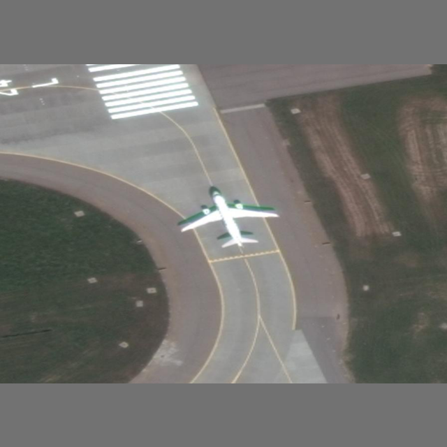
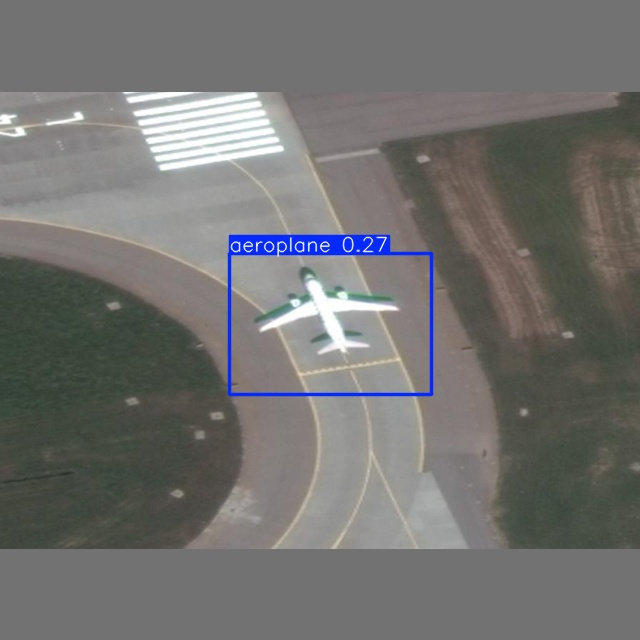

import os, shutil
# === Paths ===
label_dir = r"C:\Users\annni\Documents\1_Spring_2025\Projectspring\drone\unzipped\labelTxt_all"
image_dir = r"C:\Users\annni\Documents\1_Spring_2025\Projectspring\drone\unzipped\images_all"
out_img_dir = r"C:\Users\annni\Documents\1_Spring_2025\Projectspring\drone\xtract_40\images_tune"
out_label_dir = r"C:\Users\annni\Documents\1_Spring_2025\Projectspring\drone\xtract_40"
text_output = os.path.join(out_label_dir, "images.txt")
os.makedirs(out_img_dir, exist_ok=True)
os.makedirs(out_label_dir, exist_ok=True)
# Parameters
target_class, max_images = "plane", 40
copied_count = len([f for f in os.listdir(out_img_dir) if f.lower().endswith(".png")])
# Copy images & labels
if copied_count >= max_images:
print(f"{copied_count} images already exist. Skipping.")
else:
for label_file in os.listdir(label_dir):
if not label_file.endswith(".txt"): continue
label_path = os.path.join(label_dir, label_file)
# Check if label contains the target class
with open(label_path, "r") as f:
if not any(target_class in line.lower() for line in f):
continue
image_name = label_file.replace(".txt", ".png")
src_img = os.path.join(image_dir, image_name)
dest_img = os.path.join(out_img_dir, image_name)
# Copy image & label if new
if os.path.exists(src_img) and not os.path.exists(dest_img):
shutil.copy2(src_img, dest_img)
shutil.copy2(label_path, os.path.join(out_label_dir, label_file))
copied_count += 1
print(f"Copied: {image_name} & {label_file}")
if copied_count >= max_images: break
# Save list of copied image names
image_names = [os.path.splitext(f)[0] for f in os.listdir(out_img_dir) if f.lower().endswith(".png")]
with open(text_output, "w") as f:
f.writelines(f"{name}\n" for name in sorted(image_names))
print(f"Image list saved to {text_output}")Object Detection using DOTA Dataset and YOLOv8
This project applies YOLOv8 to detect airplanes in aerial images using a subset of the DOTA-v1.0 dataset. It includes dataset preparation, format conversion, model training, evaluation, and visualization in an interactive JupyterLab environment.
1. Dataset Preparation
Downloaded DOTA-v1.0 and extracted airplane-containing images. Selected 40 images (30 for training, 10 for validation). Converted the dataset to COCO format using dotadevkit → generated DOTA_1.0.json.
Training Setup
Installed Python 3.9 and YOLOv8 (pip install ultralytics). Verified GPU compatibility and resolved CUDA issues. Corrected class ID errors in label files (all converted to class ID 0). Resized images to 640×640 for training consistency. Trained models for 10, 30, and 50 epochs to evaluate performance progression.
import os
from PIL import Image, ImageOps
# === Paths ===
base_dir = r"C:\Users\annni\Documents\1_Spring_2025\Projectspring\drone\mini_train\images"
train_input_dir = os.path.join(base_dir, "train")
val_input_dir = os.path.join(base_dir, "val")
train_output_dir = os.path.join(base_dir, "train_resized")
val_output_dir = os.path.join(base_dir, "val_resized")
target_size = (640, 640)
# === Resize function with padding ===
def resize_images(input_dir, output_dir, set_name):
os.makedirs(output_dir, exist_ok=True)
count = 0
for file in os.listdir(input_dir):
if file.lower().endswith((".png", ".jpg", ".jpeg")):
input_path = os.path.join(input_dir, file)
output_path = os.path.join(output_dir, file)
try:
with Image.open(input_path) as img:
padded_img = ImageOps.pad(img, target_size, color=(114, 114, 114))
padded_img.save(output_path)
count += 1
except Exception as e:
print(f" Failed to process {file}: {e}")
print(f" {set_name} set: {count} images resized to {target_size} and saved to: {output_dir}")
# Run for both sets
resize_images(train_input_dir, train_output_dir, "Training")
resize_images(val_input_dir, val_output_dir, "Validation")
from ultralytics import YOLO
# Paths
input_dir = r"C:\Users\annni\Documents\1_Spring_2025\Projectspring\drone\springproject\data\input_images"
output_dir = r"C:\Users\annni\Documents\1_Spring_2025\Projectspring\drone\springproject\results_0.4"
model_path = r"C:\Users\annni\Documents\1_Spring_2025\Projectspring\drone\springproject\weights2\best.pt"
# Load model
model = YOLO(model_path)
# Run predictions on all images in input directory
for file in os.listdir(input_dir):
if file.lower().endswith(('.png')):
input_path = os.path.join(input_dir, file)
model.predict(source=input_path, save=True, save_txt=True, conf=0.5, project=output_dir, name='predict_output', imgsz=640)Model Verification
Used demo.ipynb in JupyterLab to display sample input images. Load trained YOLOv8 model (best.pt). Run predictions with a confidence threshold of 0.40. Render annotated outputs inline for visual inspection
# predict.py (inside scripts/)
from ultralytics import YOLO
import os
def run_prediction(model_path, image_path, output_dir, conf=0.4, imgsz=640):
model = YOLO(model_path)
results = model.predict(
source=image_path,
save=True,
save_txt=True,
project=output_dir,
name='predict_output',
imgsz=imgsz,
conf=conf
)
return resultsDisplaying an Image in Jupyter Notebook
Displaying assigned image using Python’s os module and IPython.display Build relative path to the image, enabling prediction with multiple images one at a time. image_path = os.path.join(“..”, “yolodata”, “input_images”, “P1117.png”)
import os
from IPython.display import display, Image
# Build relative path to image
image_path = os.path.join("..", "yolodata", "input_images", "P1117.png")
# --- Display input image ---
display(Image(filename=image_path))

Detection on the input image Saves and displays the annotated prediction image. Deletes old outputs to avoid conflicts. Confidence threshold csn be changed to our liking at this point.
import os
import shutil
from ultralytics import YOLO
from IPython.display import display, Image
# --- Define relative paths ---
model_path = os.path.join("..", "weights", "best.pt")
output_dir = os.path.join("..", "results")
predict_name = "predict_output2"
predict_folder = os.path.join(output_dir, predict_name)
# --- Remove old output folder if it exists ---
if os.path.exists(predict_folder):
shutil.rmtree(predict_folder)
# --- Load YOLOv8 model ---
model = YOLO(model_path)
# --- Run prediction ---
results = model.predict(
source=image_path,
save=True,
save_txt=True,
project=output_dir,
name=predict_name,
imgsz=640,
conf=0.25
)
# --- Display prediction image ---
predicted_path = os.path.join(results[0].save_dir, os.path.splitext(os.path.basename(image_path))[0] + ".jpg")
display(Image(filename=str(predicted_path)))
image 1/1 c:\Users\annni\Documents\Github_projects\gisannprojects\drone_yolo_demo\yolonotebooks\..\yolodata\input_images\P1117.png: 640x640 1 aeroplane, 150.1ms
Speed: 2.0ms preprocess, 150.1ms inference, 1.1ms postprocess per image at shape (1, 3, 640, 640)
Results saved to ..\results\predict_output2
1 label saved to ..\results\predict_output2\labels
Conclusion
This project demonstrates the use of YOLOv8 for detecting airplanes in aerial images using a subset of the DOTA-v1.0 dataset. Though some errors and misdetections with thresholds were observed, these can be minimized with further training, improved hyperparameter tuning and use of larger datasets.